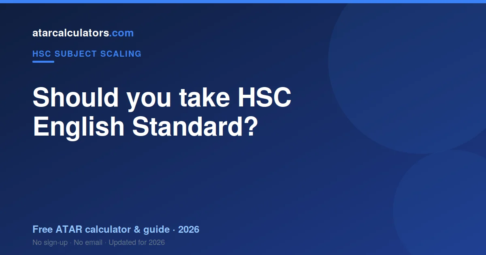
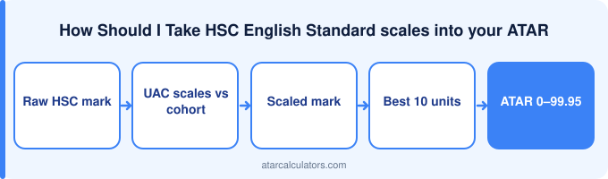

English is compulsory in the HSC, so the real decision is not whether to take English but whether to take Standard or Advanced. English Standard is more manageable than Advanced and still develops solid reading and writing skills, but it scales below average. Because scaling acts on your rank, a strong English student tends to both rank well in Advanced and benefit from its better scaling, while a student who finds Advanced texts too demanding, or whose strengths lie elsewhere, may do better in Standard. Choose the level that fits your strengths.
Key takeaways
- English is compulsory — the choice is Standard or Advanced.
- Standard is more manageable than Advanced.
- It scales below average; Advanced scales better.
- Best if English is not your strongest area.
- Choose your level for fit, not just scaling.
- A strong English student may do better in Advanced.

It depends on your goals
There is no universal answer to whether you should take English Standard. It depends on your strengths, your interests, and where you want to go after school. A subject that is right for one student can be wrong for another.
So the useful question is not "is English Standard a good subject?" but "is English Standard right for me?" That reframes the decision around your own situation, which is what actually matters.
The case for taking it
English Standard is more manageable than Advanced, still satisfies the compulsory English requirement, and develops solid reading and writing skills. It suits students whose strengths lie in other subjects.
So there are real reasons to take English Standard if it fits you. These strengths matter most when the subject aligns with your interests and goals, since that is when you are likely to do well in it.
The case against
English Standard scales below average, and does not stretch strong English students as much as Advanced. If you are a capable English student, Advanced scales better and may suit you.
So English Standard is not the right choice for everyone. These drawbacks matter most if the subject does not suit your strengths or your goals, in which case another subject may serve you better.
Is HSC English Standard hard?
English Standard is generally more accessible than Advanced, though it still requires clear analysis and essay writing. But "hard" is relative: a subject that is demanding for one student can suit another’s strengths well. So difficulty is best judged against your own abilities and interests.
So do not be put off, or drawn in, by a subject’s reputation alone. What matters is whether its demands match your strengths, since that is what determines how you will do and how much you will enjoy it.
How scaling should factor in
English Standard scales below average, but scaling should not drive your choice. Because scaling acts on your rank, a subject only scales well for you if you can rank well in it. Choosing a subject you struggle in, for its scaling, usually backfires.
So treat scaling as a minor factor, behind fit and interest. A subject that suits you can produce a strong scaled mark even if its overall scaling is modest, while a poorly chosen high-scaling subject can hurt your ATAR. See English Standard scaling explained.
Who HSC English Standard suits
HSC English Standard suits students who find Advanced texts too demanding, or whose main strengths and focus lie in other subjects. These students tend to engage with the subject, do the work, and perform well, which is what produces a good result.
So if that sounds like you, English Standard may be a strong choice. If it does not, it is worth looking at subjects that fit your strengths better, since fit is the best predictor of how you will do.
What it pairs well with
English Standard fits well with a broad range of subjects for students focusing their effort elsewhere. A coherent set of subjects can make your workload more manageable and support the pathways you are aiming for.
So consider English Standard as part of your whole subject pattern, not in isolation. How it fits with your other choices, and your goals, matters as much as the subject itself.
How to decide
To decide, weigh your interest, your strengths, any prerequisites for the courses you want, and how English Standard fits your overall pattern, with scaling as a minor factor. Talk to your teachers and, if you can, current students of the subject.
So base your decision on fit and goals, not scaling reputation or what others are doing. The right subjects are the ones you can do well in and that support where you want to go.
See how it scales
If scaling is one of your considerations, our HSC English Standard scaling calculator shows roughly how a mark scales, so you can weigh it alongside fit and interest.
Treat the result as indicative, since scaling changes each year, and remember your rank is what your scaled mark really depends on.
The workload to expect
English Standard carries a real workload: English Standard scales below average, and does not stretch strong English students as much as Advanced. If you are a capable English student, Advanced scales better and may suit you. So it is worth being honest with yourself about the time and effort it will take alongside your other subjects.
So factor the workload into your decision. A subject you can commit to, and keep up with, will serve you better than one that overwhelms your schedule, however appealing it looks on paper.
Why interest matters
Interest is not a soft factor; it is a strong predictor of how well you will do. Students who find English Standard engaging tend to do the work, stay motivated, and perform better, which lifts their rank and their scaled mark.
So weigh whether you genuinely find English Standard interesting. Enjoying a subject makes the work sustainable and the results stronger, which matters more than a subject’s reputation or scaling.
Prerequisites and pathways
Some university courses assume or require certain HSC subjects. If a pathway you are considering expects English Standard, that is a strong reason to take it, regardless of scaling. Missing an assumed-knowledge subject can make later study harder.
So check whether the courses you might want list English Standard as a prerequisite or assumed knowledge. Aligning your subjects with your intended pathway is one of the most practical reasons to choose a subject.
What if you are unsure?
If you are genuinely unsure, it can help to start the course and reassess after the first assessments, when you have a real sense of the subject and how you perform in it. Talking to your teachers and current students also gives a clearer picture than a reputation.
So do not agonise in the abstract. A little first-hand experience, and advice from people who know the subject, tells you far more about whether English Standard is right for you than guessing in advance.
Common questions
Should I take HSC English Standard?
It depends on your strengths, interests and goals. English is compulsory, so the choice is Standard or Advanced; Standard is more manageable but scales below average, while a strong English student may do better in Advanced, which scales better. Choose it if it fits you and supports where you want to go, and weigh scaling only as a minor factor behind fit and interest.
Is HSC English Standard hard?
English Standard is generally more accessible than Advanced, though it still requires clear analysis and essay writing. But difficulty is relative to your own strengths and interests, so a subject that is demanding for one student can suit another well. Judge it against your abilities, not its reputation alone.
Does HSC English Standard scale up or down?
HSC English Standard tends to scale below average, because English is compulsory and English Standard has a very large, broad cohort, so it scales below average. But scaling should not drive your choice, since scaling acts on your rank: a subject only scales well for you if you can rank well in it.
Who is HSC English Standard best suited to?
HSC English Standard suits students who find Advanced texts too demanding, or whose main strengths and focus lie in other subjects. If the subject fits your strengths and goals, it may be a strong choice; if not, a subject that suits you better will usually serve you more.